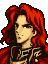

序章Birth of a Holy Knight
Scenes (25)
- ワールドマップ
- オープニング（ユングヴィ）
- オープニング（シアルフィ）
- 1ターン目エバンス軍フェーズ
- 2ターン目シグルド軍フェーズ
- 3ターン目シグルド軍フェーズ
- 会話（アゼル→シグルド）
- 会話（レックス→シグルド）
- 会話（キュアン→シグルド）
- 会話（エスリン→シグルド）
- 城訪問（シアルフィ城）
- 村訪問（マップ右上）
- 村訪問（マップ上）
- 村訪問（マップ左上）
- 村訪問（マップ左）
- 村訪問（マップ左下）
- デマジオ初戦時
- デマジオ撃破時
- ユングヴィ城制圧時
- ユングヴィ城制圧直後のターン（エバンス軍フェーズ）
- ユングヴィ城制圧直後のターン（シグルド軍フェーズ）
- 会話（シグルド⇔アルヴィス）
- ゲラルド初戦時
- ゲラルド撃破時
- エバンス城制圧時
ワールドマップ
ユグドラル大陸の中央に位置する大国
グランベルは、十二聖戦士の一人、Grannvale, the great nation at the center of the continent of Jugdral, was
聖者ヘイムによって建国された。founded by Saint Heim, one of the Twelve Crusaders.
この国には
ヘイムの子孫である王家の他に、This nation is home not only to the royal family, descendants of Heim,
やはり聖戦士の血をひく
六つの公爵家があり、but also to six Grand Duchies, which likewise carry the blood of the Crusaders.
広大な領地と軍隊を有する
公国の当主として、As lords of vast domains and their own armies,
王国に従属しつつも独自性を保っていた。the duchies kept their own independence even while remaining subject to the kingdom.
王国の政治は
老いたアズムール王に代わって、The kingdom's government, in place of the aging King Azmur,
才知あふれるクルト王子が取り仕切り、was run by the brilliant Prince Kurth,
王子の信任厚い
シアルフィ家の当主バイロン卿が、aided by Lord Byron, head of House Chalphy, who had the prince's deep trust,
ユングヴィ家のリング卿とともに、
これをたすけていた。together with Lord Ring of House Jungby.
宰相の任にあった
フリージ家のレプトール卿は、Lord Reptor of House Freege, who held the position of chancellor,
自分の地位がおびやかされることに
危機感をおぼえ、felt his own position threatened
強欲でしられる
ドズル家のランゴバルト卿をさそってand drew in Lord Langobalt of the greedy House Dozel,
反王子勢力を形成。forming a faction opposed to the prince.
ヴェルトマー家の若き当主
アルヴィス卿は、Lord Arvis, the young head of House Velthomer,
国王を守る近衛軍指揮官の立場から
政治には関与せず、did not involve himself in politics, holding the post of commander of the royal guard protecting the king,
エッダ家のクロード神父だけが、一人、
国の危険な状況に不安をおぼえていた。and only Father Claude of House Edda alone felt uneasy about the kingdom's dangerous state.
そんなおり、
東方より危急の知らせがとどく。Around that time, urgent news arrived from the east.
イード砂漠の友好都市ダーナが
東の蛮族イザークによって侵略され、Darna, a friendly city in the Yied Desert, had been invaded by the eastern barbarians of Isaach,
住民が虐殺されたというのである。and its people, it was said, had been slaughtered.
蛮族、罰するべしとの声が国中に満ち、
やがて、イザーク討伐の決定が下された。Voices across the country rose up calling for the barbarians to be punished, and at last, the decision was made to subjugate Isaach.
クルト王子は、
年老いた父王アズムールに代わり、Prince Kurth, in place of his aging father King Azmur,
国中の諸公を率いて出陣。led the nation's lords out to war.
そのかたわらにはつねに、
勇壮な武人として知られるBy his side, as always, was the man known as a valiant warrior—
バイロン卿の姿があった。Lord Byron.
遠征軍が出た後のグランベルには
わずかな兵しか残らなかったが、After the expeditionary force departed, only a scant few soldiers remained in Grannvale, but
国境を接する西のアグストリアとto the west, on the border, lay Agustria,
南西のヴェルダン王国とは
同盟の関係にあり、and to the southwest, the Kingdom of Verdane—both allied nations,
後顧のうれいはない筈であった。so there should have been no cause for concern from behind.
しかしその期待は、
あっけなく裏切られた。But that expectation was betrayed all too easily.
ヴェルダン王国の大軍が
王子ガンドルフに率いられて、A great army of the Kingdom of Verdane, led by Prince Gandolf,
突然、国境を突破し、
ユングヴィ城を包囲したのである。suddenly broke through the border and laid siege to Jungby Castle.
ユングヴィ家の留守をまもっていたのは
その娘、エーディンただ一人。The only one left to guard House Jungby was its daughter, Edain, alone.
父、バイロン卿から国の守りを託され
わずかな部下とともに城に残ったSigurd, prince of the Duchy of Chalphy, who had been entrusted with the kingdom's defense by his father Lord Byron and had remained at the castle with a handful of men,
シアルフィ公国のシグルド公子は、
この知らせに、がくぜんとする。was stunned by this news.
エーディン公女とは幼なじみであった。Princess Edain was his childhood friend.
「彼女を蛮族の手に
わたすわけにはいかない」"I cannot hand her over to those barbarians."
シグルド公子は、
すぐさま出陣の決意をした。Prince Sigurd resolved at once to march out.
グラン暦 ７５７年・・・
こうして運命の扉は開かれた。In the year 757 of the Grannvale calendar... thus, the gate of destiny was opened.
それがやがて
恐ろしい出来事のまえぶれとなる事も、That this would, in time, become the harbinger of a terrible chain of events,
この時は誰一人として
知る由もなかったのである。no one, at that moment, had any way of knowing.
オープニング（ユングヴィ）

エーディン様、敵に城を包囲されました
姫様をお守りすべき我々が、
ふがいないばかりに・・・Lady Edain, the enemy has surrounded the castle. We who should be protecting you, princess, have been so powerless...

よいのです、ミデェール
・・・・・皆よく戦ってくれました
私のことは、もういいのですIt's all right, Mideel... Everyone fought so well. Don't worry about me anymore.
今は一人でも多く、生き延びてくださいRight now, even if it's just one person, please—live on.
いいえ、エーディン様
皆、最後まで
姫様をお守りする覚悟ですNo, Lady Edain. Everyone is resolved to protect you, princess, to the very end.
命にかえても、お守りいたしますEven at the cost of our lives, we will protect you.
ありがとう、ミデェール
・・・・・ごめんなさいThank you, Mideel... ...I'm sorry.
オープニング（シアルフィ）

ユングヴィの城が
ガンドルフ軍に包囲された
このままではエーディンが危ないJungby Castle has been surrounded by Gandolf's army. At this rate, Edain is in danger.
ノイッシュ、私は彼女を助けに行く
あとのことは頼んだぞ！Noish, I'm going to go save her. I'm leaving the rest to you!

待って下さい、シグルド様
まさか一人で行かれるつもりでは？Please wait, Lord Sigurd. Surely you don't mean to go alone?
我が軍の主力は
父上と共にイザークへ遠征して
ここに残っている者はわずかしかいないThe main force of our army went on the expedition to Isaach with Father. Only a few of us remain here.
ヴェルダン軍は蛮族とはいえ大軍だ
死ぬことがわかっている戦いに
お前達をまきこめないThe Verdane army may be barbarians, but it's a large force. I can't drag all of you into a fight where death is certain.
バカなことを言わないで下さい
騎士として生まれた以上
戦いで死ぬのはあたりまえDon't talk nonsense. Having been born a knight, dying in battle is only natural.
主君一人を死なせて
おめおめと生きてはおれません
私たちも共にまいりますWe can't just sit back and let our lord die alone. We're coming with you too.
アレク、おまえも同じかんがえだろAlec, you feel the same way, don't you?

ああ、もちろんだ
しかしユングヴィの城も大事だが
村を助けるのが先じゃないのかなAh, of course. But Jungby Castle matters, sure, but shouldn't saving the villages come first?
蛮族どもは行く先々の村をおそって
奪い、殺し、焼きつくしているというThey say the barbarians are raiding every village in their path, plundering, killing, and burning it all to the ground.
手おくれにならないうちに
村々をまわって、守りを固めるように
言わなければならないだろWe ought to go around the villages and strengthen their defenses before it's too late, don't you think?
確かにそうだ
民を守ることはわれら騎士の義務だ
アレク、よく言ってくれたYou're right. Protecting the people is our duty as knights. Well said, Alec.
いや、本当はオイフェの意見なんですNah, honestly, it was Oifey's idea.
さすがは名軍師といわれた
スサール卿の孫、まだ子供なのに
いろんな事に良く気がつきますNo wonder—grandson of the famed tactician Lord Shuhal. Even though he's still a kid, he notices all sorts of things.
オイフェが王宮に来ているのか？
オイフェ、いるなら来なさいIs Oifey here at the castle? Oifey, if you're here, come out.

シグルド様、勝手に来てごめんなさい
でも出撃されるなら、
ぼくも一緒に連れていって下さいLord Sigurd, I'm sorry for coming without permission. But if you're marching out, please take me with you too.
城で留守番なんていやですI don't want to just stay behind and watch the castle.
しかし、おまえはまだ子供だ
大丈夫なのかBut you're still a child. Will you be all right?
ぼくも、もう十四才になりました
まだ戦うことはできませんが
シグルド様のお世話くらいならできますI've already turned fourteen. I still can't fight, but I can at least take care of things for you, Lord Sigurd.
おねがいです
どうか、おそばにおいて下さいPlease—I'm begging you. Please keep me by your side.
わかったよ、オイフェ
おまえが騎士みならいとして
私のところに来てから、もう二年になるAll right, Oifey. It's been two years since you came to me as a knight-in-training.
そろそろ戦場を経験するのも
悪くはないだろう
ただし、戦うのはまだ早いIt wouldn't hurt for you to experience the battlefield by now. But it's still too soon for you to fight.
しばらくは私のそばにいて
相談相手になってくれFor a while, just stay by my side and be someone I can talk things over with.
はい！ ありがとうございますYes! Thank you very much!
シグルド様、
この城の守りはどうしますか？Lord Sigurd, what will we do about defending this castle?
誰か一人は守備に上がらないと危険です
もし本拠地であるこの城が
敵に奪われたら、われらは全滅しますSomeone needs to stay on defense, or it's dangerous. If our home base, this castle, falls to the enemy, we're finished.
ノイッシュ、城の守りなら
コイツしかいないぜ！ なっ、アーダン！Noish, there's nobody better for defending the castle than this guy! Right, Arden?

アレクっ、なんで俺なんだよHey, Alec, why me?
固い、強い、おそい！
三狛子そろってるのは
おまえしかいないだろうTough, strong, and slow! You're the only one with all three!
固い、強いってのはいいけど
おそいってのは気にいらねぇなTough and strong, fine, but I don't appreciate the "slow" part.
いや、アーダン、私からも頼む
城の守りを任せられるのはおまえだけだNo, Arden—I'm asking you myself too. You're the only one I can trust to guard the castle.
はぁ、わかりました
そんなら、取りあえず守備に上がります
でもたまには私も出陣させて下さいよHah, fine, I get it. I'll go up and defend it for now. But let me go out and fight sometimes too, all right?
よし、それでは行こう
とりあえず村を助ける
そしてユングヴィへ！Good, then let's go. For now, we help the villages. And then—on to Jungby!
1ターン目エバンス軍フェーズ

てめえら、こんなちっぽけな城に
いつまでかかってやがるんでぇ
しゃあねえな・・・・・おれがやってやるYou lot, how much longer are you gonna drag this out with such a tiny castle... Damn it, I'll do it myself.
(ミデェールとガンドルフが戦闘を開始)
ふふふ・・・・・あんちゃんよぉ
一人でよくがんばったな
だがそれもこれまでだ、くらえ！Heh heh... You put up a good fight all on your own, kid. But this is as far as you go—take this!
くっ・・・・・エーディン様
・・・・・お許し下さいGuh... Lady Edain... forgive me.
(ミデェールが戦闘に敗れる)
ああっ、ミデェール・・・・・Ahh, Mideel...
おおっ、これは上玉だな
ユングヴィの姫君か・・・・・ふふ・・・・
よし、おれはこの女を連れて国に帰るOhh, now this is quite the prize. The princess of Jungby, is it... heh heh... All right, I'll take this woman back to my country.
あとのことは、
おまえとゲラルドの二人でなんとかしろLeave the rest to you and Gerald.
へぇ・・・Heh...
心配するな
弟のキンボイスの軍と一緒に戻るDon't worry. I'll head back with my brother Kinbois's army.
そうすりゃバーハラまで
攻め上ってやるぜ、なんてったって
この国には今、軍隊はいないんだThen we'll march all the way up to Belhalla—after all, there's no army left in this country right now.
俺達のしたいほうだいだぜWe can do whatever we want.
へい、わかりやした、お任せを！Yessir, understood, leave it to us!
(ガンドルフがエーディンを連れ、マップ下の橋まで移動)
てめぇ、グズグズするんじゃねぇ！
さっさと歩くんだ！！Hey, don't you dawdle! Walk, and quick about it!!
・・・・・・・・・.........
(ガンドルフがエーディンを連れ、マップ上の橋まで移動)
グランベルの連中が入って来ねぇように
橋を落としておけ！Knock down the bridge so the Grannvale lot can't follow us in!
へい、わかりましたYessir, understood.
(ガンドルフがエーディンを連れ、エバンス城まで移動)
おい、ゲラルド
おれはマーファ城に帰る
この城はおまえに任すからしっかり守れよHey, Gerald, I'm heading back to Marfa Castle. I'm leaving this castle to you, so guard it well.
へい、分かりました
しかしガンドルフ王子、
その女は誰なんです？Yessir, understood. But Prince Gandolf, who is this woman?
おれの戦利品よ
マーファに連れ帰って妻にする
どうだ、いい女だろうMy spoils of war. I'll take her back to Marfa and make her my wife. Not bad, eh?
へえ、
思わずよだれがでそうになりますぜHeh, I can't help but drool just looking at her.
ばかめ、ものほしそうな顔をするな
グランベルを占領したら
おまえにも、好きなだけくれてやるFool, don't make that greedy face. Once we've occupied Grannvale, I'll give you all you want too.
それまではがまんしろUntil then, be patient.
あなた達はケダモノです
・・・神よ、どうかこの者たちに
人間としての心を・・・You people are beasts... God, please—give these people the hearts of human beings...
なにをぶつぶつ言ってやがるんでぇ
さあ、行くぜ！ グズグズするな！！What are you muttering about? Come on, let's go! Don't dawdle!!
(ガンドルフがエーディンを連れ、マップ左端に消える)
行け、野郎ども！
つぎはシアルフィだ！
ついでに村のお宝もまきあげてこい！Go on, men! Chalphy's next! While we're at it, grab the villages' treasure too!
2ターン目シグルド軍フェーズ
(マップ上端からアゼル、レックスが登場)

レックス、なんとか間にあったようだねLex, looks like we made it in time somehow.
ああ、シグルド公子も
ヴェルダンの大軍を相手に
苦戦しているようだなYeah, Prince Sigurd seems to be having a rough time against Verdane's big army.
俺達が行けばきっと喜ぶだろう
しかしおまえも物好きな奴だ
別に、ほうっておけば良いものをHe'll be glad we came. But you're a strange one too—you could've just left it alone.
我が国の主力部隊はイザークへの遠征で
国にはほとんど残っていないOur country's main forces are off on the expedition to Isaach. Almost nobody's left in the homeland.
シグルド公子は
シアルフィに残ったわずかな兵だけで
決死の戦いをしようとしているPrince Sigurd is trying to fight to the death with just the handful of soldiers left in Chalphy.
見捨ててはおけないよI can't just abandon him.
ふっ・・・
お前もあいかわらず、すなおじゃねえな
理由はそれだけじゃないだろうHeh... You're as dishonest with yourself as ever. That's not the only reason, is it?
な、なんだよ！Wh-what are you talking about!
ユングヴィのエーディン公女が
心配なんだろう、おまえが彼女の事を
好きなのは知ってるぜYou're worried about Princess Edain of Jungby. I know you like her.
バ、バカを言うな！Y-you're talking nonsense!
ほら、もう顔が赤くなってる
はは、可愛い奴だSee, your face is already turning red. Ha, you're a cute one.
レ、レックス！ いい加減にしろよ！
ぼくはもう行くぞL-Lex! Cut it out already! I'm going on ahead!
ははは、わかったよ、ここはひとつ
俺様の力を見せてやるとするかHa ha ha, all right, all right. Guess I'll show off a bit of my own strength here too.
(アゼル、レックスがシグルド軍に加わる)
3ターン目シグルド軍フェーズ
(マップ右端からキュアン、エスリン、フィンが登場)

間にあったようだな、シグルドは無事か？Looks like we made it. Is Sigurd safe?

ええ、兄ならきっと大丈夫
でも、兄の側には
魔法を使える者がいないから、Yes, my brother should be fine... But he doesn't have anyone with him who can use magic,
きっと困っていると思います
私のライブで助けてあげたい・・・so I'm sure he's in trouble. I wanted to help him with my heal staff...
ごめんなさい キュアン
あなたまで、戦わせてI'm sorry, Quan, for making even you fight.
私はレンスター家に嫁いだ身、
もうシアルフィの人間ではないけれど、
黙って見ているのがつらくて・・・I'm a woman married into House Leonster now, no longer one of Chalphy's own, but it was too painful just to watch quietly...
兄に代わって、お礼を言いますOn my brother's behalf, let me thank you.
礼など無用だ、エスリン
シグルドは私にとっても、大切な親友No need for thanks, Ethlyn. Sigurd is a dear friend to me too.
まして、おまえを妻にした今では、
彼は私の義兄でもある
おまえ一人を戦わせはしないAnd now that I've made you my wife, he's my brother-in-law as well. I won't let you fight alone.
ありがとう・・・キュアンThank you... Quan.

急ぎましょう、
キュアン様、エスリン様
おそらく、このすぐ先が戦場でしょうLet's hurry, Lord Quan, Lady Ethlyn. The battlefield is probably just ahead.
(キュアン、エスリン、フィンがシグルド軍に加わる)
会話（アゼル→シグルド）
シグルド公子、ご無事で何よりですPrince Sigurd, I'm glad to see you safe.
きみはヴェルトマー家のアゼル公子？
どうしてここへ？You're Prince Azel of House Velthomer? Why are you here?
ヴェルダンとの戦いに
少しでもお役に立ちたいと
レックスと共に駆けつけましたI wanted to be of some help, even a little, in the fight against Verdane, so I rushed here with Lex.
ぼく達も共に戦うことをお許し下さいPlease allow us to fight alongside you as well.
むろん願ってもない事だが、きみの兄上
・・・アルヴィス卿はご承知なのかOf course, nothing could please me more. But does your older brother—Lord Arvis—know about this?
いえ・・・兄は国王側近として
近衛軍の指揮を任されていますNo... My brother's been entrusted with command of the royal guard, as the king's close aide.
ぼくも王都バーハラを離れてはならぬと
きつく言われておりましたI was told firmly that I must never leave the capital, Belhalla, either.
そうだろうな、しかしそれでは
後からおしかりを受けるのではないかI'd imagine so. But then won't you be scolded for this later?
言いにくいことですが
・・・ぼくは兄が恐ろしいのです
あの人の側にいると息がつまりそうで・・・It's hard to say, but... I'm afraid of my brother. Just being near him makes it feel hard to breathe...
それに・・・できの悪い弟など
あの人にとっても、
足手まといなだけですから・・・Besides... a no-good little brother like me is nothing but a burden to him anyway...
そうか・・・いろいろと訳がありそうだね
でも私はきみが来てくれて心強いよ
きみさえよければいつまでもいてほしいI see... sounds like there's a lot going on there. But I'm glad you came—it gives me courage. If you don't mind, I'd like you to stay as long as you like.
はい！Yes!
やっぱりうわさ通りの人だな
兄とは全然ちがう・・・He really is just like the rumors say... nothing at all like my brother...
会話（レックス→シグルド）
シグルド公子、久しぶりですPrince Sigurd, it's been a while.
レックス！
きみも応援に来てくれたのかLex! You came to help too?
アゼルにむりやり連れてこられましてね
まったく、いい迷惑ですよAzel practically dragged me along. Honestly, what a pain.
はは、相変わらず口の悪い奴だな
でも、お父上のランゴバルト卿は
この事を知っておられるのかい？Ha, still as sharp-tongued as ever. But does your father, Lord Langobalt, know about this?
まさか、あなたの父上を
目の敵にしてるオヤジが、No way. My old man's got it in for your father something fierce,
シアルフィを助ける事など
許すはずがないでしょう、
俺が勝手に来たんですthere's no way he'd allow helping Chalphy. I came on my own.
ごかいのないように言っときますが
あんたの為じゃないですよ
親友のアゼルが頼むから俺は来たんだJust so there's no misunderstanding—it's not for your sake. My best friend Azel asked, so I came.
ふっ、これはてきびしいな
・・・でも感謝するよ、
本当にありがとうHa, that's harsh... but I'm grateful. Really, thank you.
・・・まあ、できるだけの事はしますよ
ヴェルダンの蛮族なんぞに
勝手なまねはさせられませんからね...Well, I'll do what I can. Can't let those Verdane barbarians just do as they please.
会話（キュアン→シグルド）
シグルド、無事だったか！Sigurd, you're safe!
キュアン王子！ どうしてきみが・・・Prince Quan! Why are you here...
ヴェルダンとの戦いときいて
ほうっておけなくなった
私も協力させてもらいたいI heard about the fight with Verdane and couldn't just leave it be. I wanted to help too.
しかし、レンスター王国は大丈夫なのか
トラキアがねらっているときいたが？But is the Kingdom of Leonster all right? I heard Thracia has its eye on it?
そうだ
だからフィンしか連れてこれなかった
私のランスリッターは父上にお任せしたThat's true, which is why I could only bring Finn. I left my Lance Knights in Father's care.
そうか・・・すまないキュアン
きみにまで迷惑をかけてI see... I'm sorry, Quan, for dragging you into trouble too.
何を言うんだシグルド
これは我々の約束だろうWhat are you saying, Sigurd. This is what we promised each other, isn't it?
え・・・？Eh...?
少年の頃、我々三人・・・きみと、
ノディオン王国のエルトシャン、
そして私は、When we were boys, the three of us—you, Eldigan of the Kingdom of Nodion, and I—
王都バーハラの士官学校で
知り合ったmet at the officers' academy in the capital, Belhalla.
そして、たがいにゆめを語りあい、
どんな時でも助け合っていこうと
誓いあったはずだAnd we talked about our dreams together and swore to help each other no matter what.
そうだった・・・
私も忘れてはいない・・・That's right... I haven't forgotten either...
ヴェルダンの蛮族など
われらが協力すれば
すぐにでも追い払えるさVerdane's barbarians will be driven off in no time if we work together.
シグルド、忘れるなよ
きみをこんな戦いで失う事など
私はぜったいに許さないぞSigurd, don't forget—I will never allow you to be lost in a battle like this.
会話（エスリン→シグルド）
兄上、ご無事でしたか！！Brother, you're safe!!
エスリンか、久しぶりだな
よくきてくれたEthlyn, it's been a while. Thank you for coming.
ヴェルダンが攻め込んできたときいて
もう心配で心配で・・・でも良かった
お元気そうでWhen I heard Verdane had attacked, I was so, so worried... but I'm glad, you look well.
エスリンは私がヴェルダンごときに
負けるとでも思ったのか？Ethlyn, did you really think I'd lose to the likes of Verdane?
だってシアルフィには
わずかな兵士しか残っていないと
きいていましたからWell, I'd heard only a handful of soldiers were left in Chalphy.
兄上は昔から
向こう見ずなところがありましたBrother, you've always been reckless.
遠征中の父上に代わって
わたしがお助けしなければと思って・・・I thought I had to come help in Father's place, while he's away on the expedition...
ふふっ、
おまえは昔からしっかり者だったHeh, you've always been so dependable.
幼いときに亡くなられた母上に代わって
父上や私の面倒を見てくれたIn place of our mother, who passed away when we were young, you looked after Father and me.
レンスター王家に嫁いで
少しは女らしくなったかと思ったが
今も少しも変わっていないI thought marrying into the royal house of Leonster might have made you a bit more ladylike, but you haven't changed one bit.
キュアンも大変だろうな、ははは・・・Quan must have a hard time of it too, ha ha...
兄上・・・！
私が口うるさくなったのは
兄上や父上のせいですBrother...! The reason I got so naggy is because of you and Father.
二人ともだらしないから・・・Because the two of you are so careless...
はは、そうかも知れないな
エスリン・・・おまえには感謝してるんだHa, maybe that's true. Ethlyn... I really am grateful to you.
今度のことでも
本当にすまないと思ってる
何と礼を言えばよいのか・・・I really am sorry about this whole thing too. I don't know how to thank you...
兄上・・・Brother...
城訪問（シアルフィ城）
※シグルドで訪問した場合のみ[Only if visited as Sigurd]
シグルド様、お休みになりましたら
街の人々ともお会いになって下さいLord Sigurd, once you've rested, please go meet the people of the town.
シグルド様の元気なお姿を見れば
街の人々も安心すると思いますIf they see you looking well, Lord Sigurd, I think the townspeople will feel reassured.
村訪問（マップ右上）
ああ、これはよくおいで下さいました
これでこの村も救われますAh, thank you so much for coming. Our village is saved now.
この金は村人達から集めたもの、
わずかですが戦いのお役に立てて下さいThis money was collected from the villagers. It's not much, but please put it to use in the fight.
他の村も助ける事ができれば
きっとあなた達に協力すると思いますよIf you can save the other villages too, I'm sure they'll want to help you as well.
(「○○○○ ゴールドてにいれた！」)
村訪問（マップ上）
よくききなされ、剣は斧には強く、
斧は槍には強く、槍は剣に強いListen well—the sword is strong against the axe, the axe is strong against the lance, and the lance is strong against the sword.
この組み合わせを
よく、かんがえて戦いなされよThink carefully about these matchups when you fight.
そして、もし傷ついたら
教会へいくとよい
少し休むだけでたちまち完治するぞAnd if you're wounded, it's good to go to a church—just a little rest there, and you'll heal right up.
ただし、タダというわけにはいかぬ
１ＨＰにつき、５ゴールド必要じゃMind you, it's not free. It costs 5 gold per 1 HP.
(「○○○○ ゴールドてにいれた！」)
村訪問（マップ左上）
この地を治めるシアルフィ公爵家は、
代々、剣の使い手として有名なんだよThe House of Chalphy that rules this land has been famous for generations as swordsmen, you know.
なにしろ、
光神バルドの血をひいておられるからねAfter all, they carry the blood of Baldr, the god of light.
ヴェルダンの蛮族なんて、バイロン様の
聖剣ティルフィングさえあれば
あっという間にやっつけられるのにねぇThose Verdane barbarians—if only Lord Byron had his holy sword Tyrfing, he'd finish them off in no time.
(「○○○○ ゴールドてにいれた！」)
村訪問（マップ左）
このユングヴィは、弓にたけた家柄
公爵家の方々は、弓神ウルの子孫じゃThis place, Jungby, is a house known for archery. The duke's family descends from Ulir, the god of bows.
リング公爵には双子の姉妹と
その下に男の子がいたが、Duke Ring had twin sisters, and below them, a son,
双子の姉の方は幼いときに
海賊にさらわれて今も行方不明だというbut the elder of the twin sisters was carried off by pirates when she was young, and she's still missing to this day.
エーディン様の弟君のアンドレイ様は
父君リング公爵とともに遠征中だが
あまりよいうわさはきかんのぉLady Edain's younger brother, Lord Andrey, is away on the expedition with his father, Duke Ring, but I haven't heard good rumors about him.
親子の関係も冷めているらしいぞ・・・Seems the relationship between father and son has gone cold too...
(「○○○○ ゴールドてにいれた！」)
村訪問（マップ左下）
おおっ、やっと助けにきてくれたのかえ
もうだめかとおもっとったぞ
お礼にこのリングをそなたにやろうOh, you've finally come to help us. I thought it was hopeless. Here, let me give you this ring as thanks.
これはスピードリングと言ってな
身につけるだけですばやさがあがる
不思議なうでわなのじゃIt's called a Speed Ring. It's a strange bracelet—just wearing it raises your Speed.
ほれ、つけてごらん、これで敵の攻撃も
当たりにくくなる筈じゃよHere, try putting it on. This should make it harder for enemies to land their attacks on you.
(「スピードリング をてにいれた！」)
(「○○○○ ゴールドてにいれた！」)
デマジオ初戦時
来やがったな、
グランベルの腰抜けどもめ
俺様がまとめて片付けてやる！So you've come, you Grannvale cowards. I'll finish you all off myself!
デマジオ撃破時
こんなはずじゃあ・・・This... this can't be happening...
ユングヴィ城制圧時
シグルド様、
若い騎士が倒れています！Lord Sigurd, a young knight has fallen here!
ん・・・・・？
あっ、きみはミデェールじゃないか
どうした、しっかりしろ！Hm...? Ah, isn't that Mideel? What happened—stay with me!
ううっ・・・・・あなたは・・・
・・・・・シグルド様Ugh... ...you're... ...Lord Sigurd.
ミデェール、大丈夫か！？
エーディンはどうしたんだ？Mideel, are you all right!? What happened to Edain?
わかりません、たぶんガンドルフに・・・・I don't know... probably... Gandolf took her...
そうか・・・・・心配するなミデェール
エーディンは、私が取り返す
きみは安心して体をいやせI see... Don't worry, Mideel. I'll get Edain back. You just rest and heal.
いえ、シグルド様、私も行きます
エーディン様が気がかりで
とても休んでなどおれません！No, Lord Sigurd, I'm coming too. I can't rest at all with Lady Edain on my mind!
(ミデェールがシグルド軍に加わる)
(「ユングヴィ城 をせいあつした！」)
ユングヴィ城制圧直後のターン（エバンス軍フェーズ）
なに、デマジオがしくじっただと！？
ガンドルフ王子に城を任されていながら、
なんの役にも立たねぇ奴だ！What, Demazio failed!? Entrusted with the castle by Prince Gandolf, and he's useless for anything!
くそ、ユン川の橋をなおして
もう一度攻め込むぞ！Damn it, repair the bridge over the Jung River—we're attacking again!
ユングヴィ城制圧直後のターン（シグルド軍フェーズ）

国王陛下から
様子を見てくるように言われたが
蛮族相手に、こうも手こずるとはなHis Majesty asked me to come check on things, but to think you'd struggle this much against mere barbarians.
シグルド・・・
貴様もしょせんはそのていどの男か・・・Sigurd... so this is all you amount to after all...
会話（シグルド⇔アルヴィス）
※アゼル生存時[If Azel is alive]
シグルド公子、久しぶりだなPrince Sigurd, it's been a while.
アルヴィス卿！？ どうしてあなたが・・・Lord Arvis!? Why are you here...
陛下が心配されてな
私に見てくるよう命じられたHis Majesty was worried and ordered me to come see how things were.
それと、
これは陛下からくだされたものだ
受け取ってくれAnd this—this is something His Majesty has bestowed on you. Please take it.
これは銀の剣！
・・・陛下がこれを私に・・・
ああ、なんと名誉なことだThis is the Silver Sword!... His Majesty, giving this to me... ah, what an honor.
アルヴィス卿、陛下には
シグルドが感謝していたと
お伝えして下さいLord Arvis, please tell His Majesty that Sigurd is deeply grateful.
承知した、ところでシグルド
弟のアゼルが君の軍に
加わっているときいたが本当なのかUnderstood. By the way, Sigurd, I heard that my brother Azel has joined your army. Is that true?
すみません、黙って来たようでしたが
追い返せなかったI'm sorry, he seems to have come without telling you, but I couldn't turn him away.
できればしばらく
わが軍にいてほしいのですがIf possible, I'd like him to stay with my army for a while.
そうか・・・いや、無事ならいいんだ
アゼルは母親こそちがうが
私にとって、たった一人の大事な弟I see... no, as long as he's safe, that's fine. Azel may have a different mother, but he's still my one and only precious little brother.
できれば側にいてほしいが、
やむをえぬだろう・・・I'd rather have him by my side, but I suppose it can't be helped...
シグルド、アゼルの事をたのむ
いろいろと教えてやってくれSigurd, I leave Azel in your hands. Please teach him all sorts of things.
お任せ下さい
この戦いが終われば私からも
戻るように説得してみますLeave it to me. Once this battle is over, I'll try to persuade him to go back myself.
それをきいて安心した
では私は王都バーハラにもどる
陛下をお守りせねばならぬからなHearing that puts me at ease. Well, I'll be heading back to the capital, Belhalla. I must protect His Majesty, after all.
シグルド、あとは頼んだぞSigurd, I'll leave the rest to you.
※アゼル死亡時[If Azel has died]
シグルド公子、久しぶりだなPrince Sigurd, it's been a while.
アルヴィス卿！？
・・・・どうしてあなたが・・・Lord Arvis!?... Why are you here...
陛下が心配されてな
私に見てくるよう命じられたHis Majesty was worried and ordered me to come see how things were.
それと、これは陛下がくだされたものだ
受け取ってくれAnd this—this is something His Majesty has bestowed on you. Please take it.
これは銀の剣！
・・・陛下がこれを私に・・・
ああ、なんと名誉なことだThis is the Silver Sword!... His Majesty, giving this to me... ah, what an honor.
アルヴィス卿、陛下には
シグルドが感謝していたと
お伝えして下さいLord Arvis, please tell His Majesty that Sigurd is deeply grateful.
承知した、ところでシグルド
弟のアゼルが、きみの軍に
加わっているときいたが無事でいるかUnderstood. By the way, Sigurd, I heard my brother Azel joined your army—is he safe?
それが・・・アゼルは・・・That... Azel is...
戦死したということかYou mean he died in battle?
すみません
私の力が足りないばかりに・・・I'm sorry... it's because my strength wasn't enough...
アゼル・・・ばかな弟だ・・・Azel... what a foolish little brother...
(アルヴィスがマップ上端へ撤退)
(「ぎんの剣 をてにいれた！」)
ゲラルド初戦時
※ミデェールと戦った場合[If fought against Mideel]
ま、待て！
飛び道具とはひきょうだぞ！W-wait! Using ranged weapons is such a coward's trick!
だまれ！ エーディン様をどこにやった！
早く返せ！！Silence! Where have you taken Lady Edain! Give her back, now!!
※その他のユニットと戦った場合[If fought against any other unit]
グランベルの犬め、
くたばれ！You Grannvale dogs, drop dead!
ゲラルド撃破時
残念だったな・・・
あの女はここにはいねえよ
今頃は、ガンドルフ王子に・・・Too bad for you... that woman isn't here. By now, she's probably with Prince Gandolf...
エバンス城制圧時
シグルド様、
城内くまなく探したのですが
エーディン様の姿は見あたりませんLord Sigurd, I searched every corner of the castle, but Lady Edain is nowhere to be found.
なにっ・・・エーディンはいったいどこに・・・What... Where on earth could Edain be...
おそらく城が落ちる前に
ヴェルダンに連れ去られたのでしょう
・・・ご無事だとよいのですがShe was likely taken away by Verdane before the castle fell... I hope she's safe.
くっ・・・許せない・・・
やつらがエーディンを返さないかぎり
どこまでも追いかけるぞGuh... unforgivable... as long as they don't give Edain back, I'll chase them to the ends of the earth.
シグルド様、
バーハラから国王の使者がこられましたLord Sigurd, a messenger from the king has arrived from Belhalla.
シグルド殿、
このたびの戦い見事でありましたLord Sigurd, this battle was a splendid victory.
国王もいたく喜ばれ
そなたに王国聖騎士の称号を下されたHis Majesty was greatly pleased and has bestowed upon you the title of Royal Holy Knight.
身にあまる光栄、
陛下へのさらなる忠誠をちかいますAn honor beyond what I deserve. I swear even greater loyalty to His Majesty.
それと、これは重要なことですが、
城を敵に奪われてはなりません
最後まで城が残っていれば、And this is important: the castle must not be taken by the enemy. As long as the castle remains standing to the end,
あなた達は軍用金を得られますが、
敵によって破壊されるごとに、
その額は少なくなってしまいますyou'll continue receiving war funds, but each time it's destroyed by the enemy, that amount will be reduced.
今後の戦いにおいても、
どうかお気をつけ下さいPlease take care in the battles to come as well.